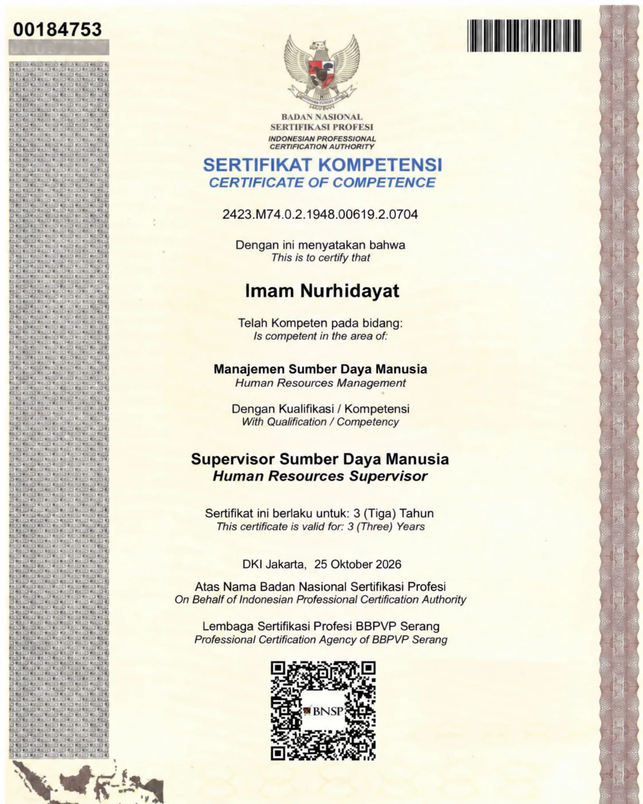
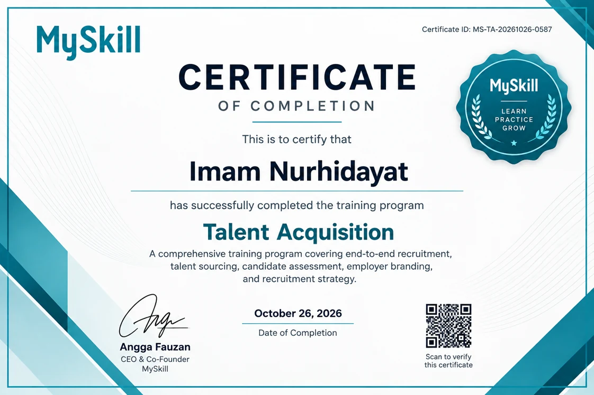
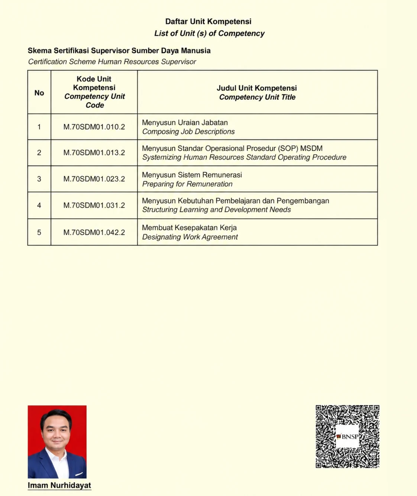

BNSP
Human Resources Manager
Certificate of competence issued on 25 October 2026 by the Professional Certification Agency of BBPVP Serang. The certificate states a validity period of three years.
Hello, I'm
I connect business needs with the right people through clear recruitment practices and data informed workforce planning.
PROFESSIONAL DEVELOPMENT
A record of professional learning and competency in talent acquisition and human resources management.

Certificate of competence issued on 25 October 2026 by the Professional Certification Agency of BBPVP Serang. The certificate states a validity period of three years.

Completed on 26 October 2026. The program covers end to end recruitment, talent sourcing, candidate assessment, employer branding, and recruitment strategy. Certificate ID: MS TA 20261026 0587.

Supporting page listing five units: composing job descriptions, systemizing HR standard operating procedures, preparing remuneration, structuring learning and development needs, and designating work agreements.
Scroll to swipe and view each certificate
WHAT I FOCUS ON
Building reliable hiring processes that help people and organizations move forward.
Aligning manpower needs, approved headcount, and business priorities across departments.
Managing sourcing, screening, interviews, selection coordination, and candidate communication.
Using structured questions, competency matrices, and evaluation scorecards to support decisions.
Tracking time to fill, vacancy aging, hiring volume, and sourcing channel performance.
Strengthening employer visibility through EVP messaging, recruitment campaigns, and partnerships.
Supporting employee documentation, HRIS records, safety induction, and a smooth start for new hires.
Scroll to swipe and explore the cards
A LITTLE ABOUT ME
I'm Imam Nur Hidayat, a Talent Acquisition professional with experience spanning hospitality and manufacturing environments.
My work brings together workforce planning, sourcing strategy, structured assessment, stakeholder collaboration, and recruitment reporting. I value clear communication, consistent processes, and hiring practices that respect people's time and potential.
With a background in Strategic Communication, I bring a people oriented approach to connecting business requirements with talent, while using data to identify opportunities to improve the hiring process.
MY PROFESSIONAL JOURNEY
Recruitment, people operations, and commercial experience across different business environments.
Hotel Salak The Heritage Bogor
Heritage city hotel in Bogor with 142 guest rooms and 13 MICE facilities.
Hotel Salak The Heritage Bogor
REHAU South East Asia
Metrics and targets are presented as stated in the supplied CV.
LEARNING & DEVELOPMENT
A foundation in communication, people, and how organizations build meaningful connections.
Pancasila University
TOOLS OF THE TRADE
A practical mix of recruitment systems, assessment methods, people skills, and operational discipline.
Recruitment & HR systems
People & collaboration
LET'S MAKE A GOOD MATCH
Have a recruitment opportunity, collaboration idea, or a role where my experience could make an impact? I'd be happy to connect.